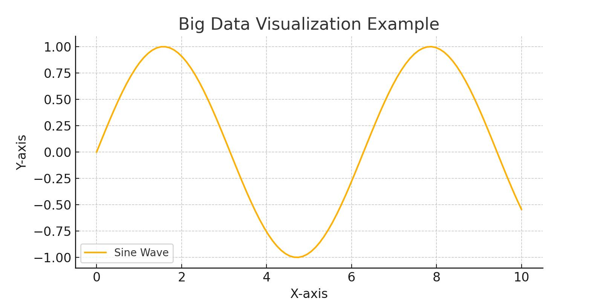

AI Builder and Data Storyteller

Big data tooling continues to evolve, but most production setups still rely on a practical stack: distributed storage, scalable compute, and clear observability.
Example snippet:
import pandas as pd
data = pd.read_csv('data.csv')
print(data.head())
print(data.describe())